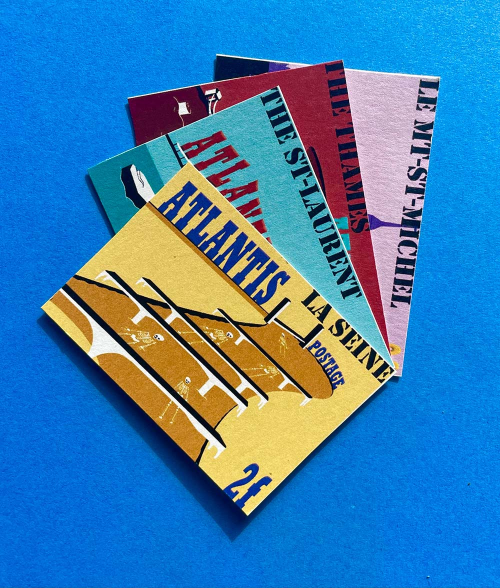
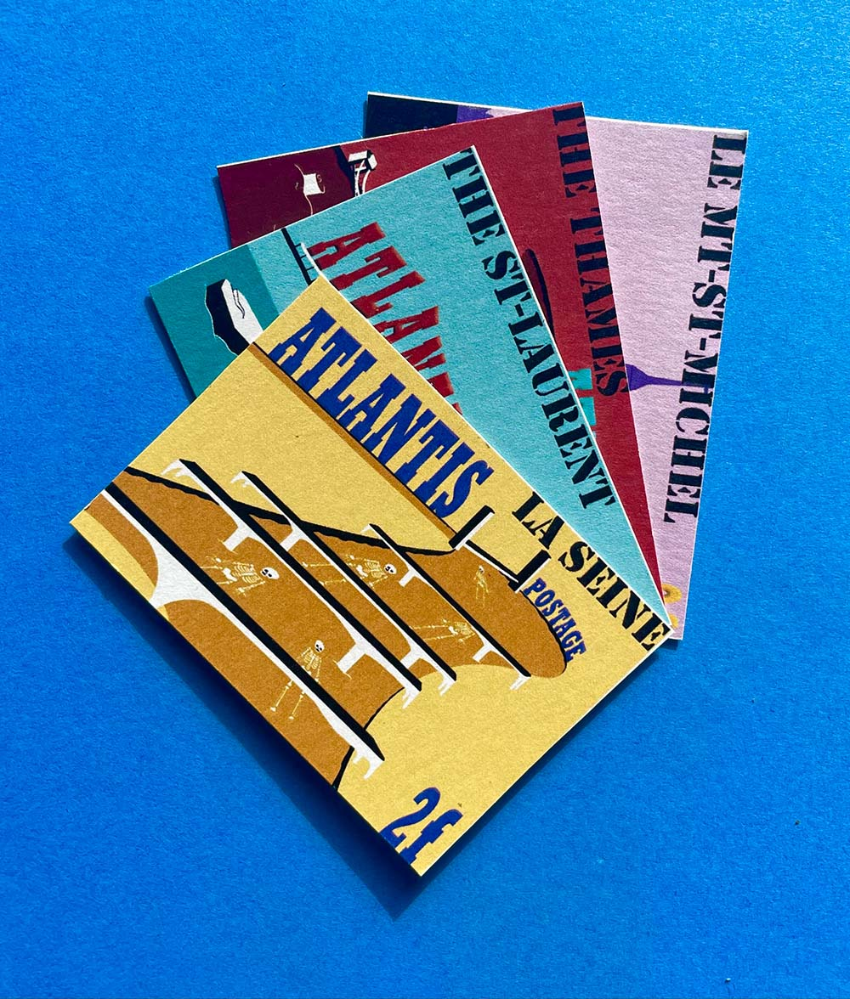

Les Eaux du Monde
Timbres
Pour ce projet, j'ai choisi une série de timbre illustrant les différents endroits où j'ai vécu et mon parcours. L'objectif était de concevoir des timbres sur les plans d'eau de différentes régions du monde et les conséquences de la crise environnementale.
J'ai utilisé la Seine qui traverse Rouen, la baie du Mont-Saint-Michel, la Tamise de Londres et le fleuve Saint-Laurent de Montréal qui sont tous affectés par le réchauffement climatique et toute autre forme de pollution provenant de l'homme.

 
